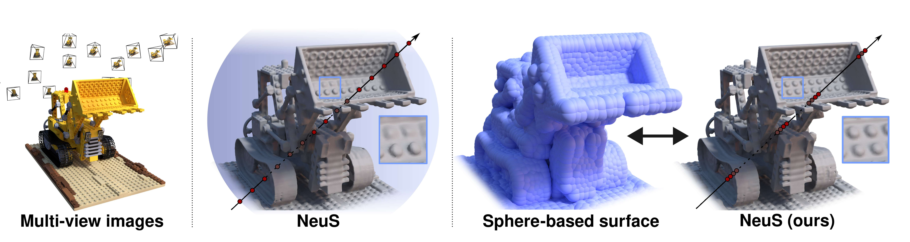

Publications

I am a researcher in the
Cognitive Computer Vision Lab within the
Chair of Visual Computing at
Friedrich-Alexander-Universität Erlangen-Nürnberg, advised by Prof. Dr. Bernhard Egger.
My research interests are within Computer Vision and Computer Graphics fields, with a focus on Neural Scene
Representations, 3D Reconstruction, and Shape Modelling.
Before joining FAU, I obtained my M. Sc. in Data Science from the
Skolkovo Institute of Science and Technology
and collaborated with
Samsung AI Center on 3D Computer Vision applications.